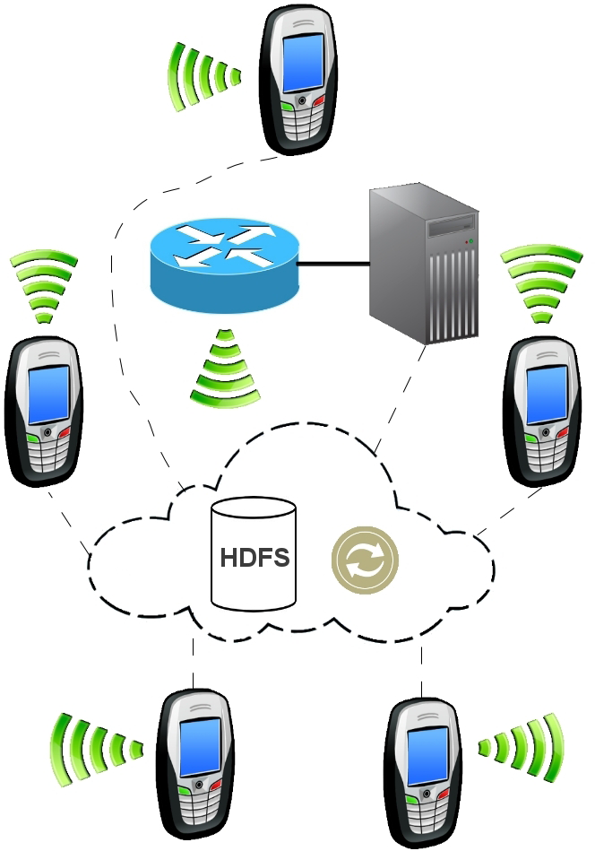
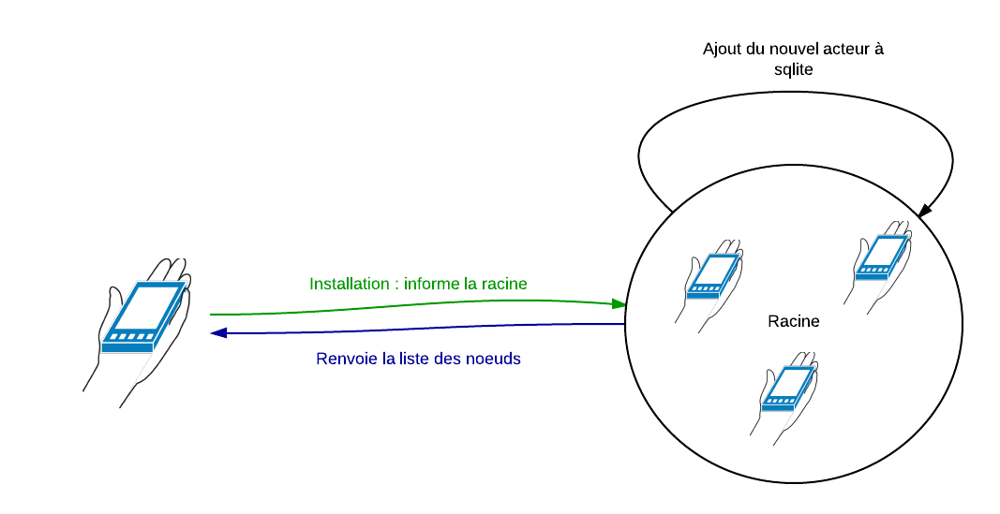
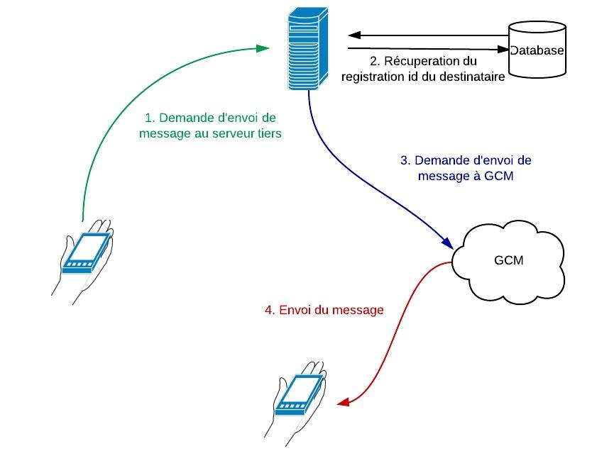
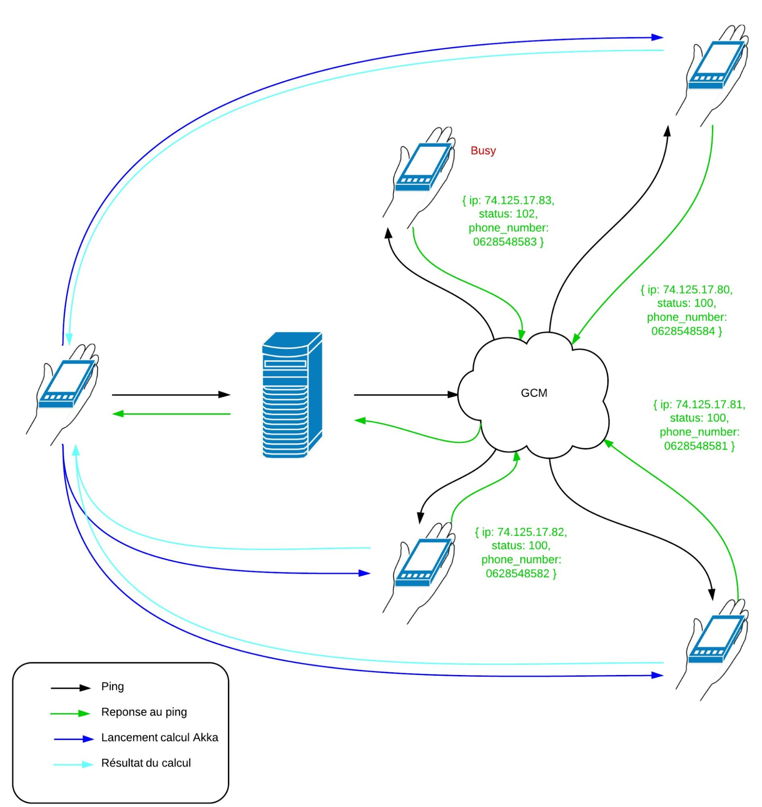

Étude de la faisabilité d'un cluster de smartphones
Android
Alger Vivien & Hostalery Eric & Salvador Cédric
& Vacher Mathieu
Problématique
mettre en place une gestion dynamique de
l’architecture de calcul pour:
- gérer la consommation de batterie
- les pannes liées au réseau mobile
Frameworks utilisés pour les
clusters traditionnels
Architecture de type Hadoop
- Serveur lançant les calculs
- Exemple : Hyrax
Architecture de type Hadoop

Architecture de type Akka
- Tous les noeuds peuvent lancer des calculs
- Serveur servant uniquement à connaître l'état des noeuds
- Exemple : Akka-mobile
Architecture purement mobile
Reflexion sur un cluster purement mobile
- Comment communiquer ?
- Comment "centraliser" la connaissance des acteurs ?
Architecture purement mobile
Reflexion sur un cluster purement mobile
- SMS
- Un (ou plusieurs) téléphone(s) racine
Architecture purement mobile

Application: portage d'Akka
couplé avec GCM
GCM
- Google Cloud Messaging
- Fonctionnement :
GCM : envoi de message

Serveur tiers relié à GCM
- Intermédiaire entre le cluster et GCM
- Stockage des informations sur les acteurs
- Beaucoup d'améliorations possibles
Application reliée à GCM

Intégration des messages par SMS
- sérialisation JSON pour les messages entre acteurs
- utilisation d'un service externe comme Twilio pour
communiquer avec GCM
- ou utiliser un téléphone comme pont avec le serveur
- ne pas spammer l'utilisateur avec des notifications
Fonctionnement
- Modèle clients(smartphones)-serveur(fixe)
- Le client se connecte, reçoit la référence d'un actor, lui envoie un message
- Le serveur associe une connexion TCP avec l'identifiant de l'appareil
et transmet le message à l'actor ciblé
- L'actor traite le message et y répond ou le transmet
- Avant de répondre, le serveur vérifie que le client est toujours connecté
Fonctionnement
- S'il n'y a plus de connexion, on utilise C2MD(GCM)
- Un message est envoyé à travers ce service
pour dire au téléphone que des réponses sont disponibles sur le serveur
- Le client pourra se connecter et les obtenir
Problèmes
- Projet plus maintenu
- Projet Scala 2.9.1 - Akka 1.2 pour Android 2.3
- Travail de portage trop important
Conclusion
- Possibilités nombreuses et variées
- Un domaine qui reste à défricher
- Technos mobiles encore assez mûres pour s'affranchir d'un serveur maître fixe
- Un avenir prometteur niveau utilisations pratiques
- Vers un BOINC pour smartphones?